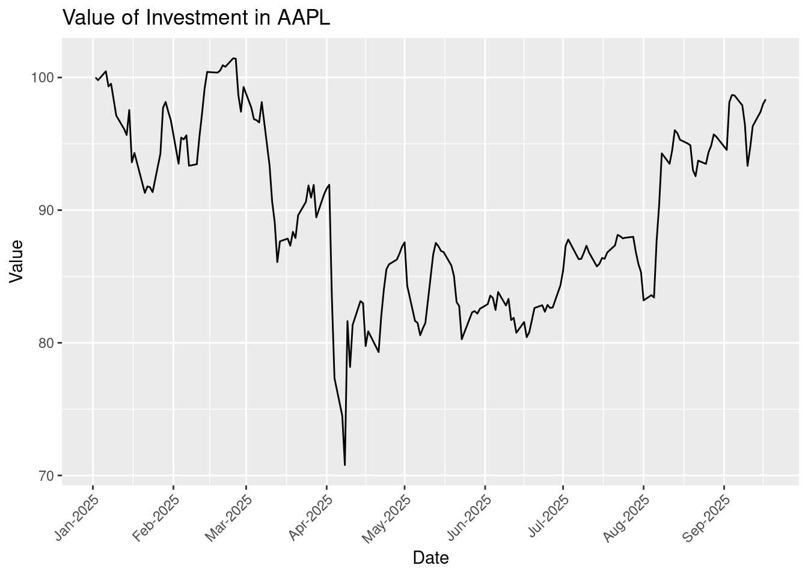
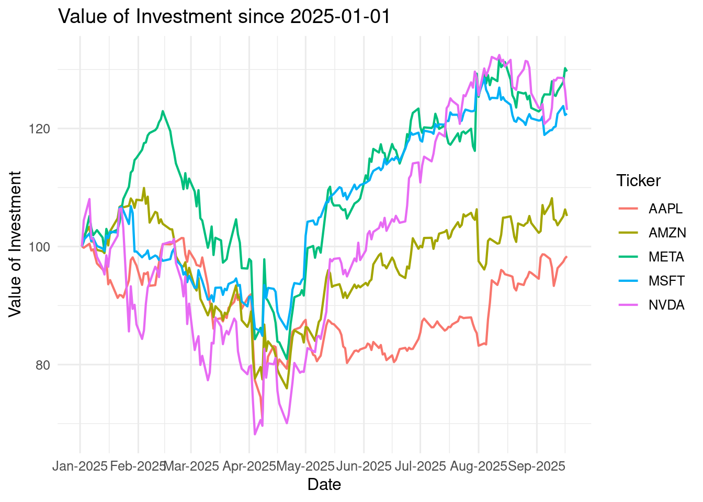
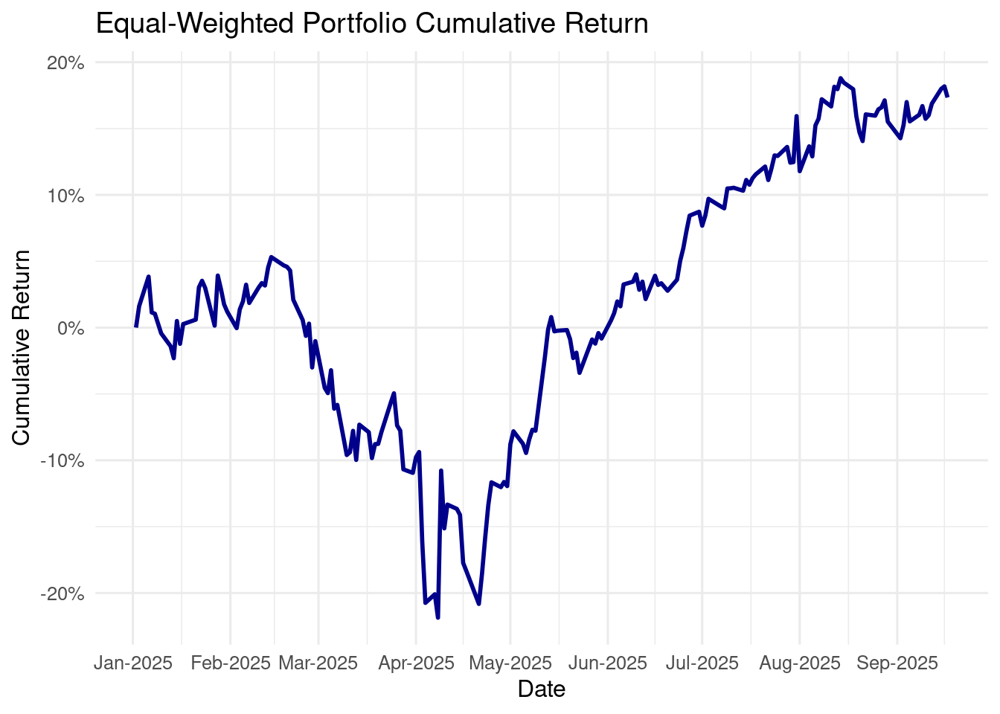
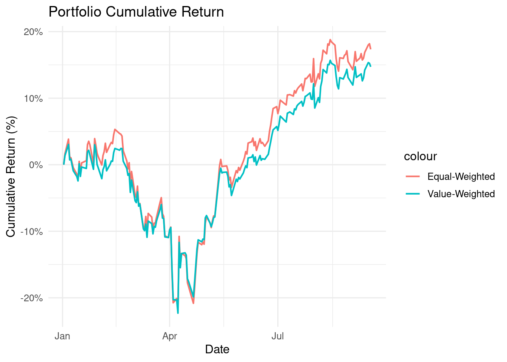

# Load packages for data wrangling and visualization
library(dplyr)
library(tibble)
library(lubridate)
library(ggplot2)
# quantmod is used to get stock price data from Yahoo Finance
library(quantmod)9 Variation in Cross-Sectional, Times-Series, and Panel Data
TipLearning Goals
By the end of this lecture, you should be able to:
- Differentiate cross-sectional, time-series, and panel data in business and finance contexts.
- Recognize how stock return and financial statement data exemplify each type of data.
- Apply data wrangling tools for date and time.
- Understand basic concepts of stock prices and returns and calculation of relevant metrics.
- Construct trading portfolios and evaluate performance of investment portfolios
9.1 The Business Challenge
Financial markets generate an enormous amount of data every second: prices, trading volumes, financial reports, press releases, news headlines, analyst reports, and even tweets. Behind every movement in the stock market lies information waiting to be uncovered.
In today’s financial market, data-driven investment and trading have become the main stream. Quantitative trading (“quant trading”) is built on the notion that market behavior can be modeled, measured, and predicted using data. Different from trading based on human judgment, quant trading sticks to a way of trading financial assets, such as stocks, currencies, or commodities, using mathematical models and evidence from data analysis, instead of relying purely on human intuition or gut feeling.
Instead of asking:
“Do I think this stock will go up tomorrow?”
Quant traders think about:
“What does the data tell me about the likelihood this stock will go up tomorrow?”
In this chapter, we will step into the role and act as a quantitative trader, analyzing stock prices and experimenting with simple trading strategies. To prepare for this role, we first need to understand how data describes the variation across entities and time. Next, we will work on stock price data to get familiar with how to deal with dates and time stamps effectively. Finally, we will create a mini trading strategy in panel data using past stock price performance.
Before diving into stock prices and financials, it’s essential to understand the type of data we are working with. Different types of data allow us to answer different questions:
Cross-sectional data tells us about differences across entities at one point in time.
Time-series data helps us observe how something evolves over time.
Panel data combines both, letting us see how multiple entities change across time.
When dealing with data in the financial market, recognizing the structure of your data is crucial for selecting the right models and strategies.
9.2 Cross-sectional Data
NoteDefinition: Cross-Sectional Data
Data consists of observations collected at a single point in time across multiple subjects or entities (e.g., firms, stocks, households, individuals, cities, countries). This type of data provides a “snapshot” of a population at that moment, showing patterns and differences among various entities
You can consider cross-sectional data as taking a “photo” or “snapshot.” Imagine pausing the market at a time point, and writing down the stock price and return of every constituent firm in the S&P 500. That dataset would let us compare firms against each other at that moment: Which companies outperformed, which lagged behind, and whether certain firm characteristics were linked to higher or lower returns at the time point.
10 min
In this exercise, we are going to get a sense of cross-sectional data by looking at stock trading data of S&P 500 firms as of 31/12/2024:
TipS&P 500
The Standard and Poor’s 500, or simply the S&P 500, is a stock market index tracking the stock performance of 500 leading companies listed on stock exchanges in the United States. It is one of the most commonly followed equity indices and includes approximately 80% of the total market capitalization of U.S. public companies, with an aggregate market cap of more than $57.401 trillion as of August 29, 2025. (Source: Wikipedia)
Note that the list of firms belonging to the S&P 500 index is not constant. Firms may be added to or dropped from the list due to changes in market capitalization (i.e., the total value of the shares) or merger and aquisition (M&A). In addition, the index may have more than 500 firms because it may include two share classes of its component companies.
- Load the data,
sp500_xs.csv, that captures stock prices of S&P 500 firms on 31/12/2024. Take a glimpse of the data. In the dataset,prcis stock price,retrefers to daily stock return,shroutstandards for the number of shares outstanding, andvolis the trading volume (the number of shares being traded during that day).
# Read data into R
sp500_xs <- YOUR_CODE("../data/sp500_xs.csv")
# Take a glimpse
YOUR_CODE- Calculate total market capitalization (i.e., value of all shares, calculated as stock price * number of shares). Which are the top 5 companies in terms of total market cap? Do you know these firms?
top5 <- sp500_xs %>%
YOUR_CODE(mktcap = YOUR_CODE) %>%
arrange(YOUR_CODE) %>%
YOUR_CODE(5)
top5Solution
# Read data into R
sp500_xs <- read_csv("../data/sp500_xs.csv") Rows: 503 Columns: 6
── Column specification ────────────────────────────────────────────────────────
Delimiter: ","
chr (1): tic
dbl (5): stock_id, prc, ret, shrout, vol
ℹ Use `spec()` to retrieve the full column specification for this data.
ℹ Specify the column types or set `show_col_types = FALSE` to quiet this message.# Take a glimpse
sp500_xs %>% glimpse()Rows: 503
Columns: 6
$ stock_id <dbl> 10104, 10107, 10138, 10145, 10516, 10696, 11308, 11403, 11404…
$ tic <chr> "ORCL", "MSFT", "TROW", "HON", "ADM", "FI", "KO", "CDNS", "ED…
$ prc <dbl> 111.70, 397.58, 108.45, 202.26, 55.58, 141.87, 59.49, 288.46,…
$ ret <dbl> 0.063265, 0.057281, 0.007057, -0.035525, -0.230407, 0.067977,…
$ shrout <dbl> 2748922, 7430436, 223938, 652182, 533381, 600186, 4323414, 27…
$ vol <dbl> 1711372, 5256086, 319141, 645959, 1805810, 533327, 2938936, 3…top5 <- sp500_xs %>%
mutate(mktcap = prc * shrout) %>%
arrange(desc(mktcap)) %>%
head(5)
top5# A tibble: 5 × 7
stock_id tic prc ret shrout vol mktcap
<dbl> <chr> <dbl> <dbl> <dbl> <dbl> <dbl>
1 10107 MSFT 398. 0.0573 7430436 5256086 2954192671.
2 14593 AAPL 184. -0.0422 15441881 11805597 2847482702.
3 84788 AMZN 155. 0.0215 10387381 9505252 1612121531.
4 86580 NVDA 615. 0.242 2464000 9656674 1516025329.
5 13407 META 390. 0.102 2200049 3428921 858327139.9.3 Time-Series Data
NoteDefinition: Time-Series Data
Time-series data is a sequence of observations of a single subject or entity collected over time at successive (usually equally spaced) intervals. This type of data provides a trajectory for a single subject or entity over time.
Time-series data varies in an orthogonal dimension compared with cross-sectional data. Instead of taking a snapshot of all stocks on the market, time-series data records the same set of information of a single stock over time. For instance, you may collect daily stock prices of Apple Inc. (ticker: AAPL) over time and evaluate the ups and downs.
9.3.1 Data Wrangling for Timestamps
Many datasets (especially in finance, business, and analytics) are tied to dates and times (e.g., stock prices, sales transactions, website visits, or macroeconomic indicators).
However, dates and times are often a tricky component in programming:
- They can appear in texts, numbers, or a mix of the two (e.g., December 31, 2024 vs. 12/31/2024)
- The same date/time can be expressed in many different ways depending on convention or users’ habits (e.g., 12/31/2024 vs. 31/12/2024 vs. 2024-12-31; 5:00 PM vs. 17:00)
- Dates and times can be added/subtracted, but the numeral system for time is different (12/24/60 as bases)
- Time zones and daylight saving times
When we work on financial market data, date and times are extremely important. When we analyze stock prices and financial performance, we would like to have data ordered by date and time. Sometimes, we even need to merge datasets by dates and date ranges.
lubridate is the package in R that offers powerful functions and tools to deal with time stamps and periods. We will be actively using the tools from lubridate throughout this chapter. You may refer to R4DS for more comprehensive reading of dealing with time stamps and using lubridate.
9.3.2 Obtain Stock Price Data Using quantmod
In R, there is one powerful package that allows us to easily help us acquire financial market data, quantmod. getSymbols() is a powerful function in quantmod that uses the API to fetch financial market data from various sources (e.g., Yahoo Finance).
NoteWhat is
quantmod?
quantmod stands for Quantitative Financial Modelling Framework. It is mainly used for downloading, charting, and modeling financial time series data such as stock prices, exchange rates, or interest rates.
quantmod offers a wide range of data sources, including Yahoo Finance and Federal Reserve Economic Data (you may try to use quantmod to obtain data from FRED).
We are going to use getSymbols() from quantmod to get a sense of time-series data by looking at Apple Inc. (AAPL)’s year-to-date stock prices.
Load required packages and use getSymbols() to obtain AAPL’s stock prices from 01/01/2025 to now. Check the class of the output. Is the output in the format of tibble?
# Obtain AAPL's stock prices
getSymbols("AAPL",
src = "yahoo",
from = as.Date("2025-01-01")
# to = # If to = is not specified, it fetchs data up till the most recent
)[1] "AAPL"head(AAPL) AAPL.Open AAPL.High AAPL.Low AAPL.Close AAPL.Volume AAPL.Adjusted
2025-01-02 248.93 249.10 241.82 243.85 55740700 242.9874
2025-01-03 243.36 244.18 241.89 243.36 40244100 242.4992
2025-01-06 244.31 247.33 243.20 245.00 45045600 244.1333
2025-01-07 242.98 245.55 241.35 242.21 40856000 241.3532
2025-01-08 241.92 243.71 240.05 242.70 37628900 241.8415
2025-01-10 240.01 240.16 233.00 236.85 61710900 236.0122class(AAPL)[1] "xts" "zoo"
Note
as.Date()
as.Date() is a base function in R. You can use it without loading lubridate. It converts dates stored in strings into <date> format. Inside the function, you need to specify the original format of dates in strings.
By default, as.Date() tackles dates in the format of “yyyy-mm-dd”. If the original date strings are not in this format (e.g., dd/mm/yyyy), you need to specify format = "%d/%m/%Y in the function. %d, %m, and %Y are regular expressions that standard for a specific way expressing time concepts (see R4DS for more details).
Tip(Optional)
xts objects
xts stands for eXtensible Time Series.
- It is a special type of data structure in R built on top of a matrix or data frame, but with dates (or times) as the row index.
- This means, instead of just rows numbered 1, 2, 3…, each row is labeled by a date (or datetime)
It is designed and optimized for time-series data like stock prices, exchange rates, or economic indicators. It makes it very easy to deal with dates and times:
- Subset by time (
AAPL["2022-01"]gives all January 2022 data) - Merge or align time series of different data categories and frequency
- Allow efficient processing of time-series data and save memory
However, as an object specializing in time-series data, xts may not be generalizable to other tasks and cannot be directly processed by our tidyverse tools.
We can convert xts objects into tibbles so that we are able to apply our data wrangling tools
Convert the output in the xts class to tibble. Look at date, is it a date variable?
# Convert xts objects to tibble
aapl_tbl <- as_tibble(AAPL, rownames = "date") %>%
rename_with(~ sub("AAPL\\.", "", .x)) # remove "AAPL." prefix
head(aapl_tbl)# A tibble: 6 × 7
date Open High Low Close Volume Adjusted
<chr> <dbl> <dbl> <dbl> <dbl> <dbl> <dbl>
1 2025-01-02 249. 249. 242. 244. 55740700 243.
2 2025-01-03 243. 244. 242. 243. 40244100 242.
3 2025-01-06 244. 247. 243. 245 45045600 244.
4 2025-01-07 243. 246. 241. 242. 40856000 241.
5 2025-01-08 242. 244. 240. 243. 37628900 242.
6 2025-01-10 240. 240. 233 237. 61710900 236.# Check the type
class(aapl_tbl$date)[1] "character"# Convert into dates
aapl_tbl <- aapl_tbl %>%
mutate(date = as.Date(date))
# Check the type again
class(aapl_tbl$date)[1] "Date"Visualize the price trends using ggplot:
ggplot(aapl_tbl, aes(x = date, y = Close)) +
geom_line(color = "blue") +
scale_x_date(date_breaks = "1 months", date_labels = "%b-%Y") +
labs(title = "AAPL Stock Price (2025)",
x = "Date", y = "Adjusted Close Price ($)") +
theme(axis.text.x = element_text(angle = 45, hjust = 1))
Important
It is important that the variable, date, is converted to the “Date” format. If not, ggplot() and other functions in R may not be able to correctly recognize and process dates.
- Try to plot the price trend without converting the date variable
You may have seen stock prices being plotted into “candlesticks.” The candlestick chart is way to visualize stock price movements by showing (1) open prices, (2) close prices, (3) highest prices, and (4) lowest prices together in one plot. The candlestick chart offers a neat way to convey rich information in prices.
Let’s use ggplot() to generate a candlestick chart for the period between 08/09/2025 and 12/09/2025:
candle_sticks <- ggplot(aapl_tbl %>%
filter(date>=as.Date("2025-09-08") & date<=as.Date("September 12, 2025", format = "%B %d, %Y"))
, aes(x = date, open = Open, high = High, low = Low, close = Close)) +
tidyquant::geom_candlestick() +
labs(title = "AAPL Candlestick Chart",
y = "Price", x = "Date")
TipCandlestick Chart
Candlestick chart is widely used to represent stock price information. For each trading day (or week, month, quarter, …), the chart use a thin bar to represent open and closing prices and long sticks to show the highest and the lowest prices of a day.
In addition, it uses colors to distinguish gains and losses. In the chart below, red bars and sticks represent losses, whereas blue bars and sticks represent gains.
Read the candlestick chart of AAPL between 08/09/2025 and 12/09/2025. Given that Apple Inc. announced its new iPhone, Airpods, and Apple Watches on 10/09/2025, how do you think Apple’s investors perceive the new product?
candle_sticks9.3.3 From Prices to Returns
A stock (or share) represents a small piece of ownership in a company. If you buy one share of Apple, you literally own a tiny slice of Apple. As a shareholder, you benefit when the company does well because the value of your share can go up, and you may also receive dividends, which are cash payments companies sometimes give to their owners.
Stock prices simply how much one share costs in the market. For example, if Apple is trading at $234.07 as of 12/09/2025, that means you would pay $234.07 to own one share or sell a share of Apple at $234.07. Stock prices change constantly throughout the day as investors react to news, company announcements, or broader economic conditions.
When we look at stocks, we usually care less about the exact price levels but more about how that price changes over time. That is where the concept of a return comes in. A stock’s return tells us the percentage gain or loss over a given period. For example, without considering any dividends, if Apple’s share price rises from $234.07 to $250, the return is about 6.8% ((250.00 - 234.07)/234.07). In simple terms, returns show you how much your money has grown (or shrunk) as a percentage, making them directly comparable across investments in different companies and time periods.
Assume there is no dividends, stock splits, and repurchases, we can use the stock prices at two different time points (\(t1\) and \(t2\)) to calculate the returns accrued in the period between the two time points:
\(Return_{t1, t2} = (Price_{t2} - Price_{t1})/Price_{t1}\)
In practice, investors are interested in returns of fixed time periods, such as daily returns, monthly returns, quarterly returns, and annual returns. We use the differences between the closing price at the end of the period and the closing price right before the period to calculate such returns.
Hence, if we would like to calculate daily returns for AAPL on day \(t\), we are going to first calculate the changes in closing prices from day \(t-1\) to \(t\) and then scaled by the closing price of day \(t-1\) (the base period). To do so, we need to use the lag() operation:
# Calculate returns from prices
aapl_return <- aapl_tbl %>%
arrange(date) %>% # Sort in ascending order to avoid mistakes
transmute(date, Price = Close,
Return = (Close - lag(Close))/lag(Close))
Tip
transmute()
transmute() combines mute() and select(). We can both select columns and do operations over columns ithin transmute().
9.3.4 Cumulative Returns
As an investor, you may be interested in how much money you are making by buying and holding a stock. We can achieve this goal by either calculating price changes or compounding daily returns. Compounding of returns are more commonly used in portfolio management as it may be difficult to get “prices” for each portfolio. To prepare us to analyze portfolio returns, we are going to get familiar with compounding operations in R:
aapl_cumret <- aapl_return %>%
mutate(Return = if_else(is.na(Return), 0, Return)) %>% # Fill missing as 0
mutate(Cumret = cumprod(1 + coalesce(Return, 0)) -1)
NoteHow to calculate cumulative (compounded) returns?
In the code chunk above, we use cumprod(1 + coalesce(Return, 0)) - 1 to calculate cumulative returns. If we express it in mathematically, we are simply calculating:
\(Cumret_t = (1 + Return_1)\times(1 + Return_2) \times ... \times (1 + Return_{t-1}) \times (1 + Return_t)\)
Returnis the stock return for each daycoalesce(Return, 0)means that we replace missing values inReturnas 0 (otherwise, everything after a missing value will be missing)- To do compounding, we need to add 1 to returns and then multiply these returns up to a given date
cumprodis used to calculate cumulative product of all daily returns up to a given date
With Cumret, we can visualize the ups and downs of our wealth. Suppose we invest $100 into AAPL at the beginning of 2025, the plot below shows how the $100 evolves throughout the year:
# Do some transformation to Cumret so that it reflects investment value
ggplot(aapl_cumret, aes(x = date, y = 100 * (Cumret + 1))) +
geom_line() +
scale_x_date(date_breaks = "1 months", date_labels = "%b-%Y") +
labs(title = "Value of Investment in AAPL",
y = "Value", x = "Date") +
theme(axis.text.x = element_text(angle = 45, hjust = 1))
Note
For a single stock, looking at prices directly is actually easier than doing the compounding return above. However, when it comes to an investment portfolio of multiple stocks, our approach using compounding returns becomes much better by unifying all stocks using returns and avoiding dealing with prices of multiple stocks.
9.4 Panel Data
NoteDefinition: Cross-Sectional Data
Panel data is a combination of cross-sectional and time-series data. Instead of only looking across firms at one point in time (cross-sectional), or following a single firm across time (time-series), panel data records many firms across many points in time.
Most of time, the data available to us comes as panel data. Panel data has two (orthogonal) dimensions, entity and time. Below is an example of panel data where rows represents each entity and columns represents time points.
panel <- read_csv('../data/panel_example.csv')Rows: 10 Columns: 6
── Column specification ────────────────────────────────────────────────────────
Delimiter: ","
dbl (6): id, Year1, Year2, Year3, Year4, Year5
ℹ Use `spec()` to retrieve the full column specification for this data.
ℹ Specify the column types or set `show_col_types = FALSE` to quiet this message.panel# A tibble: 10 × 6
id Year1 Year2 Year3 Year4 Year5
<dbl> <dbl> <dbl> <dbl> <dbl> <dbl>
1 1 0.520 0.600 0.584 0.562 0.554
2 2 0.215 0.252 0.0458 0.626 0.396
3 3 0.0319 0.880 0.363 0.274 0.707
4 4 0.817 0.550 0.852 0.869 0.594
5 5 0.743 0.110 0.895 0.0314 0.205
6 6 0.439 0.554 0.749 0.581 0.0274
7 7 0.748 0.902 0.501 0.612 0.640
8 8 0.372 0.886 0.942 0.819 0.245
9 9 0.482 0.120 0.560 0.492 0.267
10 10 0.542 0.807 0.781 0.296 0.720 In practice, such data is often stored into the “long form” rather than the “short form”:
# Make the data as long table
panel_long <- panel %>%
pivot_longer(
cols = starts_with("Year"), # columns to reshape
names_to = "Year", # new column for year labels
values_to = "Value" # new column for values
)
panel_long# A tibble: 50 × 3
id Year Value
<dbl> <chr> <dbl>
1 1 Year1 0.520
2 1 Year2 0.600
3 1 Year3 0.584
4 1 Year4 0.562
5 1 Year5 0.554
6 2 Year1 0.215
7 2 Year2 0.252
8 2 Year3 0.0458
9 2 Year4 0.626
10 2 Year5 0.396
# ℹ 40 more rowsThe strength of panel data is that it lets us study both differences across firms and changes within firms over time in the same framework. This opens the door to much more powerful analysis. For example, we could ask: “Do firms with higher profitability earn higher future returns?” By using panel data, we can track the same firm’s financial ratios and returns over time while also comparing across many firms at once. This dual perspective helps us avoid misleading results that might come from only looking at a single snapshot or only tracking one company.
Panel data is especially important because it allows us compare one observation with other observations at the same time point or with itself in the past. Such features of panel data help us draw more reliable conclusions and inferences from data.
Tip(Optional) Fixed Effects
Panel data allows us to use fixed effects to isolate the effect of individual entities or time. Most of us may have used the notion of fixed effects consciously or unconsciously. For example, when we compare entities with other comparable entities at the same time point, we are actually controlling for time fixed effects. When we compare someone with its past, we are accounting for individual entity fixed effects.
Fixed effects refers to the average effect either at the entity level or at the time level. Understanding the concept of fixed effects may help avoid fallacys in drawing conclusions.
Time fixed effects
- Adjust for events that affect all entities
- Example: during the 2008 financial crisis or the COVID-19 pandemic, stock prices fell for almost every firm
- We should not attribute the decline of stock prices to firm-specific reasons if this is a market-wide phenomenon
- We can figure which firms experience declines of relatively smaller magnitude than others or compare a firm with the average of all entities at the same time point
Firm Fixed Effects
- Account for entity-level time-invariant effects
- Certain industries are innately more profitable than others (e.g., high tech vs. cafe)
- If we observe that AAPL makes net profit margin of 25.26%, while a local cafe makes 10%, it does not necessarily mean that the local cafe is doing poorly.
- We need to compare “Apple” to “Apple”!
9.4.1 Construct an Investment Portfolio
Do not put all your eggs in one basket!
In practice, quantitative hedge funds and traders rarely put all their money into just one stock. Instead, they spread their investments across many different stocks, creating what we call a portfolio. By looking at these portfolios, we can see two kinds of variation: cross-sectional variation, which tells us how different firms perform on the same day, and time-series variation, which tracks how a single firm’s performance changes from day to day. The job of a quant trader is to analyze both types of variation and find patterns that can guide trading decisions. In this lecture, we are going to step into their shoes and explore real data to see how this works.
We have obtained a list of stocks that ranks top 10 in terms of market cap in our earlier exercises. Now, we will use getSymbols() to retrieve their stock prices and combine all these data as a panel. Note that you are not required (but highly recommended) to fully understand the block of code below.
# Get the List of Tickers
ticker_list <- top5$tic
# Get prices for all stocks on the list
getSymbols(ticker_list, from = "2025-01-01", auto.assign = TRUE)[1] "MSFT" "AAPL" "AMZN" "NVDA" "META"# Grab all output objects into a list
prices_list <- mget(ticker_list, inherits = TRUE)
# Convert a list of xts objects into a tibble
all_stocks <- imap_dfr(
prices_list,
~ {
xt <- .x
tic <- .y
df <- as_tibble(data.frame(date = index(xt), coredata(xt)))
# Strip any "AAPL." / "MSFT." etc. prefix from all price columns
names(df) <- sub("^.*\\.", "", names(df))
df %>%
mutate(ticker = tic) %>%
select(date, ticker, Open, High, Low, Close, Volume, Adjusted)
}
)9.4.2 Visualize Returns of Individual Stocks
Now, we are going to visualize the ups and downs of the five stocks in our portfolio since 01/01/2025. As you can see from the data, the price levels of stocks vary significantly across different firms. In order to make them comparable, a better option is to calculate cumulative returns and make a plot with five stocks sharing the same starting point. To do this task, we can replicate what we have done for AAPL to other stocks:
For each stock (i.e., group_by(ticker)), calculate daily returns and then compound returns up to each date:
# Calculate cumulative returns
all_stocks <- all_stocks %>%
group_by(ticker) %>%
arrange(date, .by_group = TRUE) %>%
mutate(
Return = Close / lag(Close) - 1,
Cumret = cumprod(1 + coalesce(Return, 0)) - 1
) %>%
ungroup()Similar to what we have done for AAPL, assume that we invest 100 dollars into each stock, plot the value of investment for each stock since 01/01/2025:
ggplot(all_stocks, aes(x = date, y = 100 * (Cumret + 1), color = ticker)) +
geom_line(size = 0.75) +
labs(
title = "Value of Investment since 2025-01-01",
x = "Date",
y = "Value of Investment",
color = "Ticker"
) +
scale_x_date(date_breaks = "1 months", date_labels = "%b-%Y") +
theme_minimal(base_size = 12)Warning: Using `size` aesthetic for lines was deprecated in ggplot2 3.4.0.
ℹ Please use `linewidth` instead.
9.4.3 Calculate Equal-Weighted Portfolio Returns
Quant trading always invests in multiple stocks and construct a portfolio to manage all investment targets. When constructing portfolios, a fund can invest in constituent stocks equally. For example, if you have five stocks in your portfolio, you put 20% of your wealth in each of them. Such portfolios are called as equal-weighted portfolios.
In some cases, we do not want to evenly split our money among serveral stocks. We may want to invest a big more on certain stocks based on our assessment or statistical analyses. One common practice of quant investment is to construct value-weighted portfolios based on market capitalization. Also, you may place larger weights on Nvidia (NVDA) and Microsoft (MSFT) because you expect that the positive (or even overly positive) sentiments for AI may push stock prices of these stocks even higher.
Here, we can use dplyr to easily summarize portfolio_returns at the portfolio level and calculate returns for such equal-weighted portfolio:
# Equal weighted portfolio
pf_ew <- all_stocks %>%
group_by(date) %>%
summarise(
ew_ret = mean(Return, na.rm = TRUE) # equal weight = simple average
) %>%
arrange(date) %>%
mutate(
ew_cumret = cumprod(1 + coalesce(ew_ret, 0)) - 1
)
# Plot returns of equal-weighted portfolio over time
ggplot(pf_ew, aes(x = date, y = ew_cumret)) +
geom_line(color = "darkblue", size = 1) +
labs(
title = "Equal-Weighted Portfolio Cumulative Return",
x = "Date", y = "Cumulative Return"
) +
scale_x_date(date_breaks = "1 months", date_labels = "%b-%Y") +
theme_minimal(base_size = 12) +
scale_y_continuous(labels = scales::percent)
10 min
Make use of the variables in sp500_xs to construct value-weighted portfolio:
Assign weights using market capitalization as of 2024-12-31. Note that you do not want to use information or data that is not available when you construct any porfolio (i.e., no foresight).
Aggregate the five stocks into a value-weighted portfolio and visualize the return of the portfolio.
Solution
all_stocks_vw <- all_stocks %>%
left_join(top5 %>% select(ticker = tic, mktcap),
by = 'ticker')pf_vw <- all_stocks_vw %>%
group_by(date) %>%
summarise(
vw_ret = weighted.mean(Return, mktcap, na.rm = TRUE),
.groups = "drop"
) %>%
arrange(date) %>%
mutate(
vw_cumret = cumprod(1 + coalesce(vw_ret, 0)) - 1
)# Plot returns of equal-weighted portfolio over time
ggplot() +
geom_line(data = pf_ew, aes(x = date, y = ew_cumret, color = "Equal-Weighted"), linewidth = 0.75) +
geom_line(data = pf_vw, aes(x = date, y = vw_cumret, color = "Value-Weighted"), linewidth = 0.75) +
labs(
title = "Portfolio Cumulative Return",
x = "Date", y = "Cumulative Return (%)",
colar = "Portfolio Types"
) +
theme_minimal(base_size = 12) +
scale_y_continuous(labels = scales::percent)
9.5 Conclusion
In this lecture, you learned how data structure shapes the questions you can ask and the tools you should use:
Cross-sectional data compares entities at one time (e.g., S&P 500 firms on 31/12/2024).
Time-series data tracks one entity over time (e.g., AAPL daily prices in 2025).
Panel data combines both, letting you study differences across firms and changes within firms over time.
Key takeaways
Always identify your unit of observation (entity, time) and understand the variation of your data along different dimensions before proceeding with data analyses.
Data wrangling skills for dates and times
Simple quant trading workflows (more in the workshop)